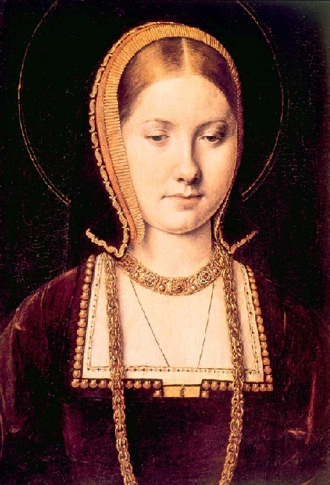
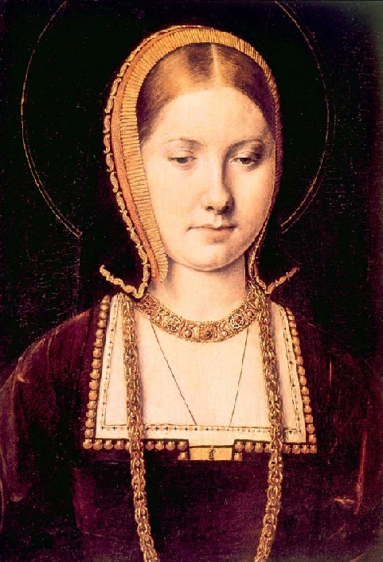

6+1 cudownych żon Henryka VIII
Pierwsza żona Henryka VIII
Powtarzająca się historia, czyli o żonach króla Anglii
Katarzyna Aragońska
Była hiszpańską księżniczką, miała zostać wydana za starszego brata Henryka - Artura. Przybyła do Anglii w wieku 16 lat, nie znając języka angielskiego. Po śmierci następcy tronu, Katarzyna poślubiła jego młodszego brata. Było to wymogiem utrzymania sojuszu między Anglią a Hiszpanią. Ślub odbył się w roku 1509. Miała jedną córkę, która dożyła dorosłości - Marię (późniejsza królowa Maria I Tudor).
Galeria

Ciekawostki
Ogromną rolę w życiu Katarzyny Aragońskiej odgrywała religia. Jej rodzicami byli katoliccy władcy i przez to już od dziecka jako infantka miała ogromną potrzebę obcowania z Bogiem. Do modlitwy uciekała także w trudnych chwilach, prosząc Stwórcę i świętych o pomoc w zajściu w ciążę i urodzenie następcy tronu, o którym tak marzył jaj mąż. Nigdy nie wyparła się swojej wiary i przez nią właśnie nie zgodziła się na unieważnienie małżeństwa z Henrykiem VIII, które według niej było niepodważalne.
Fakty
Lata życia
Rodzice
Pochodzenie
1485-1536
Izabela Kastylijska i Ferdynand Aragoński
Hiszpania
Katarzyna Aragońska
Była hiszpańską księżniczką, miała zostać wydana za starszego brata Henryka - Artura. Przybyła do Anglii w wieku 16 lat, nie znając języka angielskiego. Po śmierci następcy tronu, Katarzyna poślubiła jego młodszego brata. Było to wymogiem utrzymania sojuszu między Anglią a Hiszpanią. Ślub odbył się w roku 1509. Miała jedną córkę, która dożyła dorosłości - Marię (późniejsza królowa Maria I Tudor).
Galeria

Ciekawostki
Ogromną rolę w życiu Katarzyny Aragońskiej odgrywała religia. Jej rodzicami byli katoliccy władcy i przez to już od dziecka jako infantka miała ogromną potrzebę obcowania z Bogiem. Do modlitwy uciekała także w trudnych chwilach, prosząc Stwórcę i świętych o pomoc w zajściu w ciążę i urodzenie następcy tronu, o którym tak marzył jaj mąż. Nigdy nie wyparła się swojej wiary i przez nią właśnie nie zgodziła się na unieważnienie małżeństwa z Henrykiem VIII, które według niej było niepodważalne.
Fakty
| Lata życia | Rodzice | Pochodzenie |
| 1485-1536 | Izabela Kastylijska i Ferdynand Aragoński | Hiszpania |